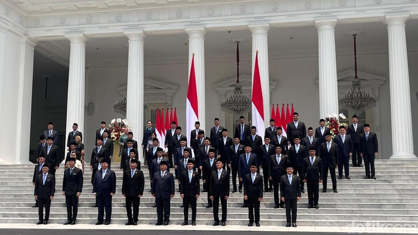

Presiden Prabowo Panggil Menkeu, Menko Perekonomian, dan Menaker, Bahas Sritex?
ditulis oleh Fahrizal raja. pada 29 oktober 2024. 
Presiden Prabowo Subianto memanggil sejumlah menteri, termasuk Menteri Koordinator (Menko) Bidang Perekonomian Airlangga Hartarto, Menteri Keuangan Sri Mulyani, dan Menteri Ketenagakerjaan Yassierli, ke Istana Kepresidenan, Jakarta, pada Selasa (29/10/2024) siang. "Diminta menghadap. Dengan beberapa menteri yang lain, menko juga," ujar Yassierli saat ditemui di Istana.
Ketika ditanya apakah pertemuan tersebut akan membahas PT Sri Rejeki Isman Tbk (Sritex) yang baru-baru ini dinyatakan pailit, Yassierli mengaku belum mengetahui kepastiannya. Namun, ia menyatakan bahwa ada kemungkinan topik tersebut akan dibahas, mengingat ia membawa berkas bertuliskan "Sritex". "Antisipasi. Saya harus mengantisipasi apa pun kemungkinan nanti. Bisa jadi (bahas Sritex)," katanya.
Sementara itu, Menko Perekonomian Airlangga dan Menkeu Sri Mulyani tidak memberikan jawaban yang jelas mengenai apakah kedatangan mereka ke Istana berkaitan dengan upaya penyelamatan Sritex yang dinyatakan pailit. Sebelumnya, Presiden Prabowo memerintahkan Kementerian Perindustrian, Kementerian Keuangan, Kementerian BUMN, dan Kementerian Ketenagakerjaan untuk segera mengkaji berbagai opsi penyelamatan bagi PT Sritex. Baca juga: Sritex Dinyatakan Pailit, Segini Kewajiban Utangnya Perintah tersebut disampaikan oleh Menteri Perindustrian Agus Gumiwang dalam keterangan tertulis pada Jumat (25/10/2024). "Presiden Prabowo sudah memerintahkan Kementerian Perindustrian, Kemenkeu, Menteri BUMN, dan Menteri Tenaga Kerja untuk segera mengkaji beberapa opsi dan skema untuk menyelamatkan Sritex," ujar Agus.
Agus juga menjelaskan bahwa prioritas pemerintah saat ini adalah menyelamatkan karyawan Sritex dari pemutusan hubungan kerja (PHK). "Pemerintah akan segera mengambil langkah-langkah agar operasional perusahaan tetap berjalan dan pekerja bisa diselamatkan dari PHK. Opsi dan skema penyelamatan ini akan disampaikan dalam waktu secepatnya, setelah empat kementerian selesai merumuskan cara penyelamatan," jelasnya.